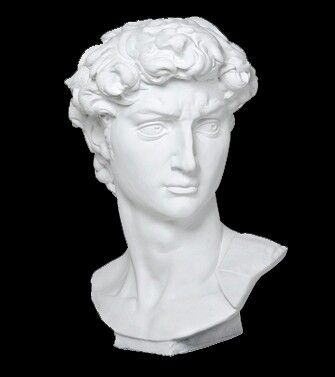

Preguntas y Respuestas
En esta seccion respondemos preguntas comunes varias sobre nuestro querido Vaporwave,
cada vez que tengas alguna pregunta puedes dejarlo en la seccion de comentarios, y probablemente la coloquemos en esta seccion.
¿Porque causa nostalgia el Vaporwave?
Usualmente esto se atribuye a los factores visuales, comunmente se dice que
a las personas les causa nostalgia sobre recuerdos que nunca sucedieron ¿extraño no?. Pero no, esa es la magia de este genero
te teletransporta a recuerdos exageradamente increibles. Tan solo escuchalas en un dia libre tarde/noche tu solo, y deja la magia
fluir por si sola. Recomendadisimo.
¿Existe el estilo Vaporwave?
Tecnicamente si, pero la mayoria de las veces se conoce como el estilo Aesthetic, en el cual
se usa mucha ropa retro, lo bueno de todo esto es que se logra regresar estilos antiguos y que eran muy elegantes, ya probaste alguna vez
este estilo?